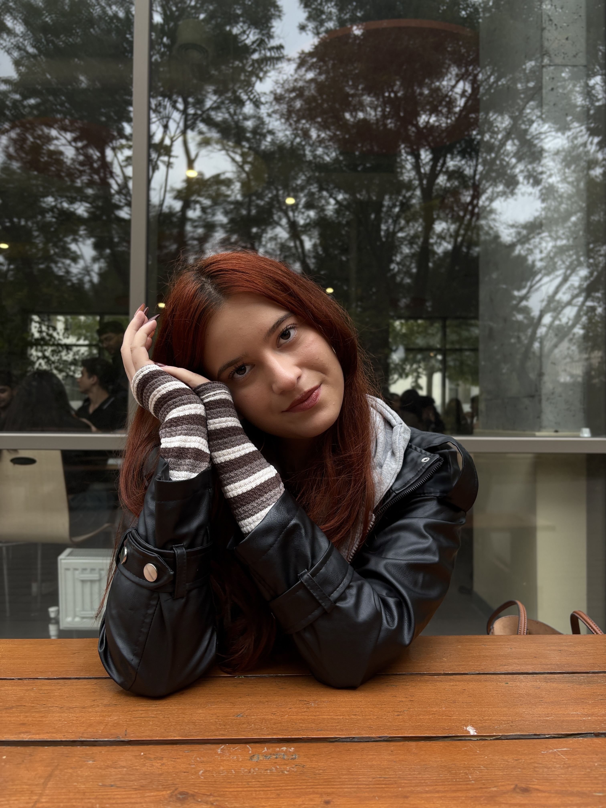

Nuray Mirzeyeva

Summary
I am Nuray Mirzeyeva.I was born on May 15, 2007 in Balaken. I am very hardworking student.I am eager to learn new things.
Education
- Balaken district secondary school number 2 named after Nesimi(2013-2024)
- Azerbaijan State University of Economics-Information Technology(bachelor degree)-(2024-2028)
Work Experience
Actually, I have no work experience as a Web Developer.But i worked as a bag seller at "Khagani Mall" this summer.(2025)
Skills
- English Level-B2
- Microsoft Office Programs-7/10
Awards and Sertifications
- Winner of "Hackathon" at SAF (2022)
- Final Participant of Technofest (2022)
- First place in the district and region in the "IV Youth League of Intellectual Clubs" (2023)
- Volunteer of the "Yukselish" competition (2025)
- Volunteer of the "Formula 1 Grand Prix Azerbaijan" (2025)
- Member of the Youth Development and Career Center (2022-2023)
Other